-
Digital inspiration
I found some HDL codes I wrote before about displaying numbers through VGA signal and segment displays. Their timings reminds me of the role of clock in a digital circuit.
By the way, the segment displays works similarly. Check this video out! -
Digital idea: drafts
I drawn 2 drafts about the my special digital clocks! One for segment displays and another for VGA displays.
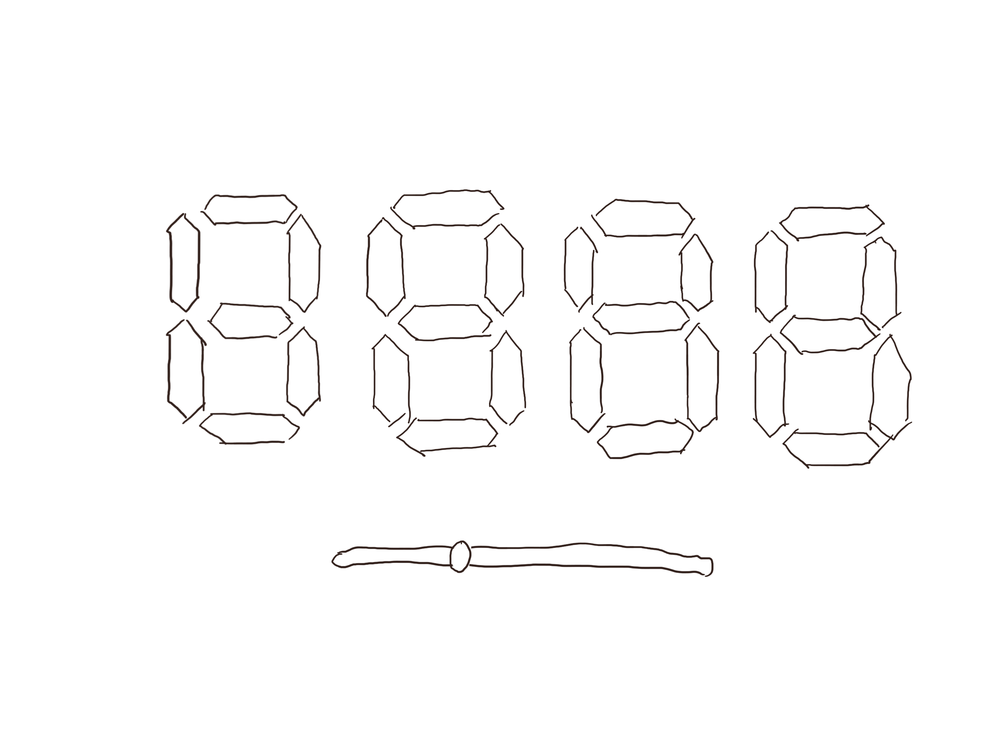 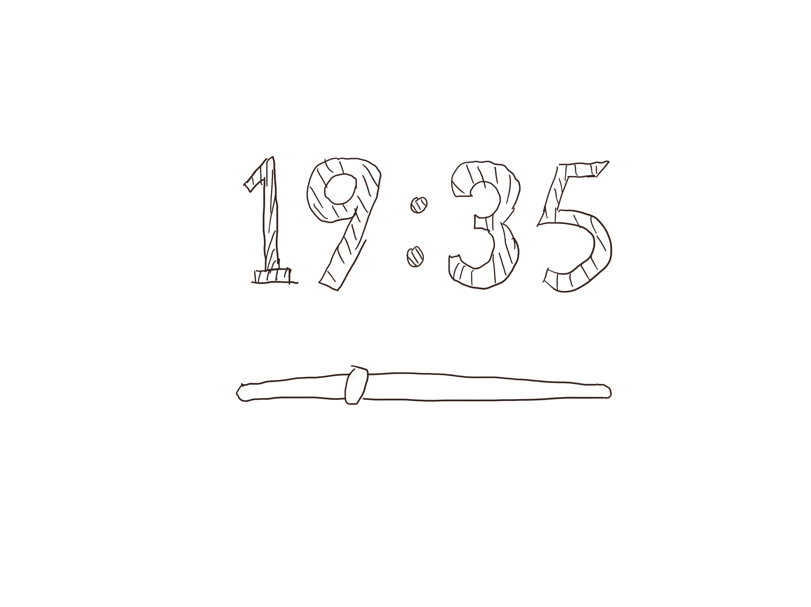 -
Time and clock among cultures
Wow! According to Lera Boroditsky's research (you can have a general view form this link How Languages Construct Time), time are endowed with different directions in different languages. This is a fun point. Maybe I can focus on diferences among cultures and languages.
-
Different time units or the time-direnction experiment?
Just two different ideas from the original inspiration from Lera Boroditsky: one is generally the recurrence of Lera Boroditsky's experiment in this paper and another is to display time in different calendars around the world. Here are my drafts about the page design!
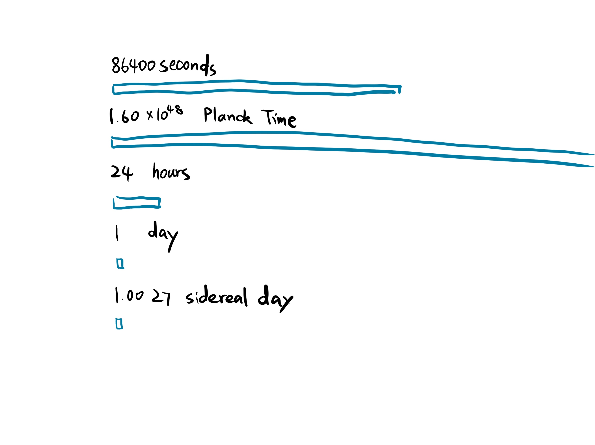 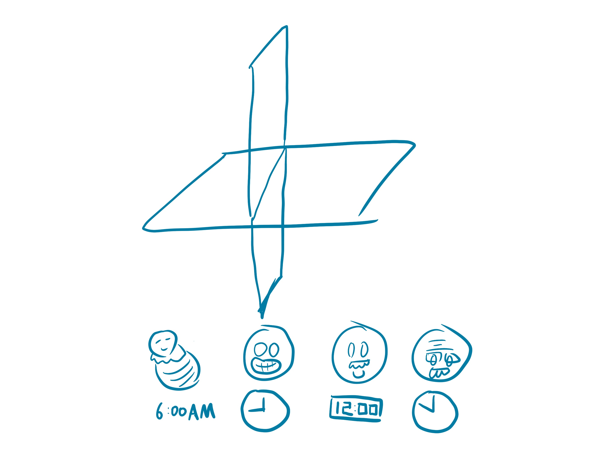 -
Desicions on ideas!
We have discussed it during the class and I finally decided to do the VGA thing! Fisrt webpage draft!
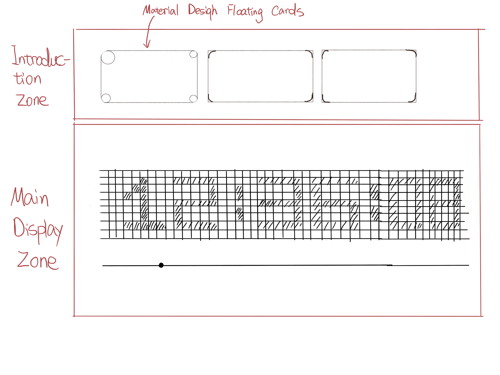 -
First try!
Just trying to display some number! Using mathematica to generate display matrix! You won't want to see the matrix data part, it is just a pile numbers.
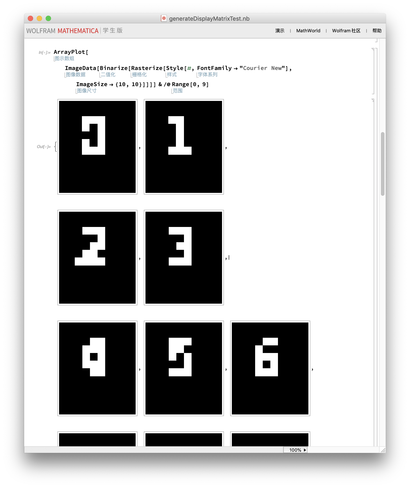 -
Webpage design refine
Just focusing more on the clock itself!
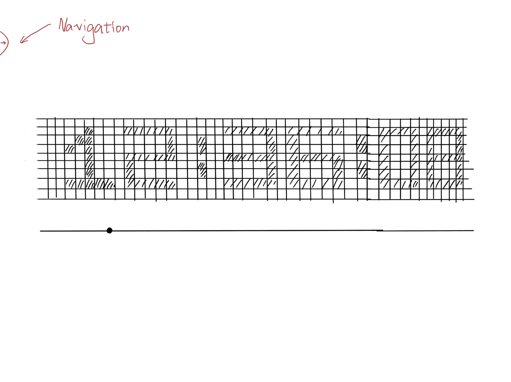 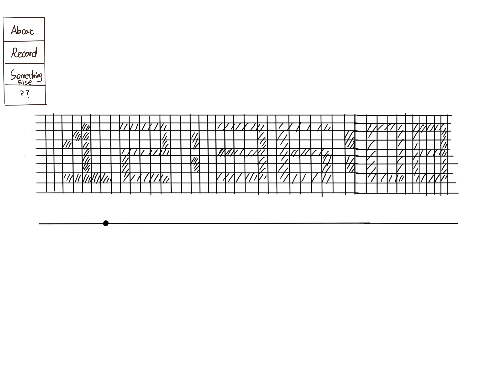 -
Side product!
Check it out! All the pixels changes ramdomly! It just looks cool! Matt told me it can be on my 404 page! It is a super good idea!
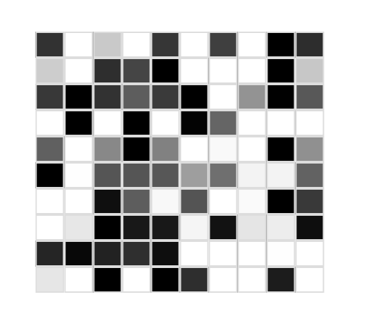 -
Second try.
All six numbers together! It is a clock!

-
Designing my onw font.
Instead of using some fonts, I decided to make my own number style! Pixel arts!
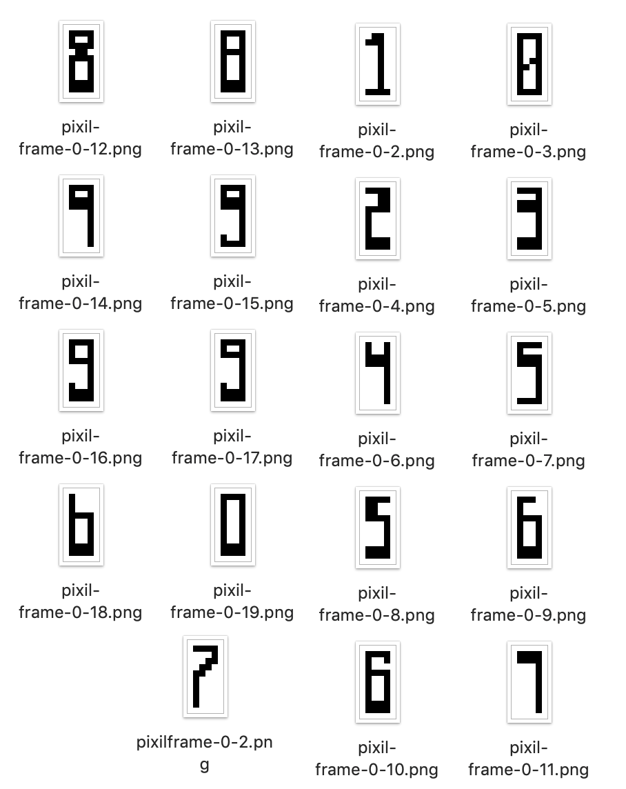 -
Main page & 404 page!
Check out this page!
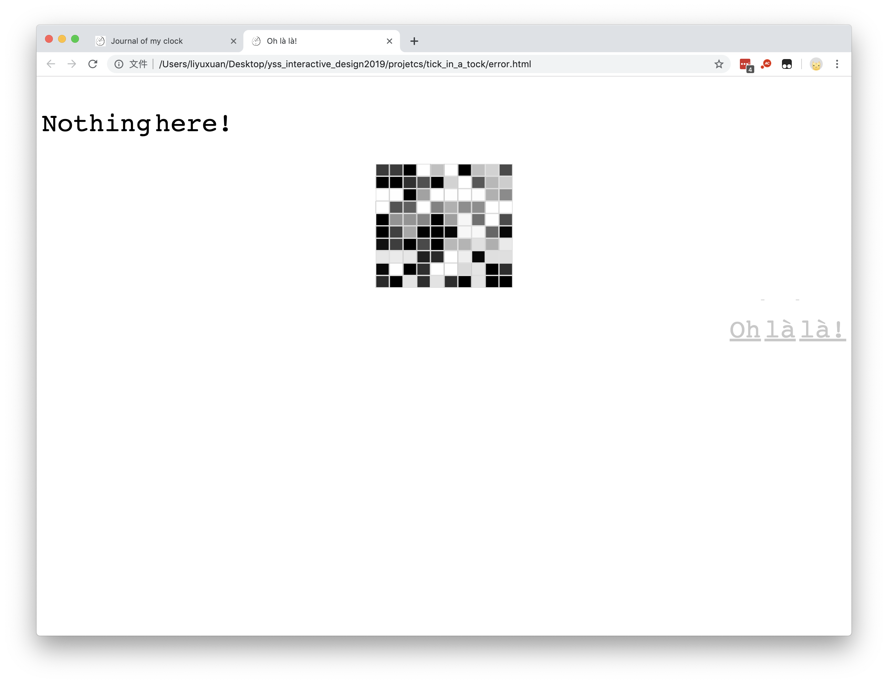 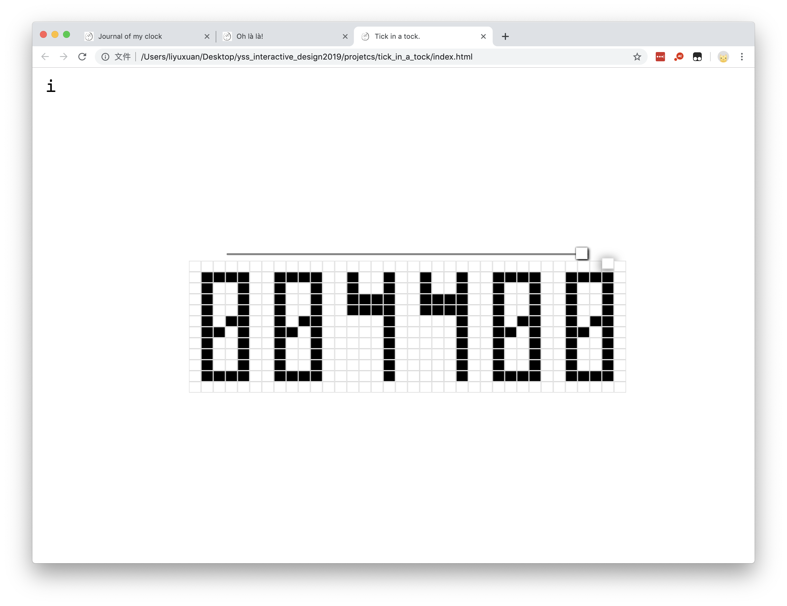 -
Hosting my own website.
Finally, www.kisou.club will bring you the right page! But I don't know why kisou.club doesn't work.
-
Bug fixed!
Thanks god! Finally kisou.club works, too! Just some configuration problems.